| My View |
|
| Note: The My View capability, implemented as applets, requires JRE 1.4.2 or higher (you can download
a JRE from http://java.sun.com/j2se). If the site that you are
viewing was published without applets, then My View will not be present.
The tree browser that appears in the left pane of the browser window lets you navigate the topics in the Web site. Initially it contains a set of default trees, or tabbed view panels. You can customize navigation by creating own personalized tree views. To start, you save one of the default trees to use as the starting template for your new tree view. You can then create, customize, or delete topics. Types of TreesThe tree browser displays two types of trees:
The tree browser lets you to show and hide trees on other tabs so you can view only those trees that you want.
Showing and hiding tree set states is persistent. The next time you start the Web site, you will see either the tree that you chose or all of the trees, depending on the state you selected the last time you used the Web site. Creating a My View TreeYou can create an unlimited number of My View trees. The following example shows how to add a modifiable My View tree.
The Save As dialog box appears, prompting you for a tree title for your My View
tree.
Customizing a My View TreeYou can customize your My View tree and its topics in a number of ways:
Adding a new topic to your My View tree
|
|
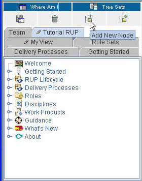 |
To add a new topic, click Add New Node. |
| The Properties Editor dialog box opens. Enter the various properties of this new topic. |
|
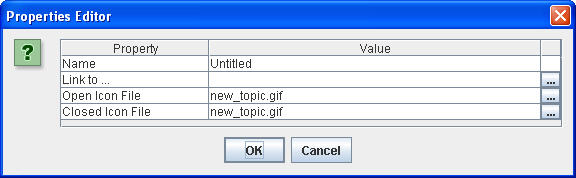 |
| Enter the various property values. Note that you can use the browse button on the far right to browse to file locations for local file links and icons. |
|
|
|
The new topic is added to end of the tree. |
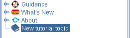 |
Note: You can also add new topics by dragging files from a file explorer, such as Windows Explorer, onto any topic in the tree. The topic name is initially the file name. You can change it as described in this section.
Changes to your My View tree are saved as they are made.
Add an existing topic from a default tree to a My View
tree 
This section describes how to copy an existing topic from a default tree into your My View tree.
|
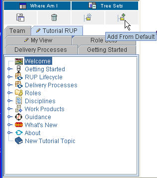 |
Click Add From Default. |
|
Drag any topic into your My View tree. |
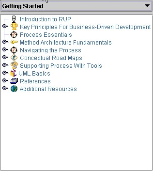 |
|
You can also choose the default tree from which to drag topics. Click in the list to select the default tree you want. The tree refreshes with the topics from the selected default tree. |
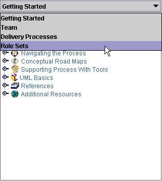 |
Changes to your My View tree are saved as they are made.
Inserting a new topic
|
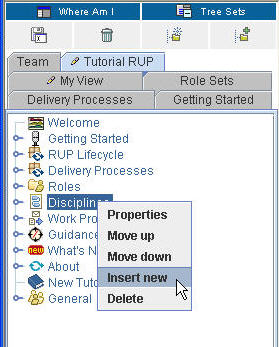 |
To insert a new topic into an existing one, right-click it. On the pop-up menu, click Insert new. The following example shows the insertion of a new topic (titled New tutorial topic) in Disciplines. |
| The Properties Editor dialog box opens. |

|
| Enter the various properties for this new topic. |
|
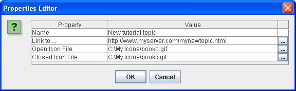 |
|
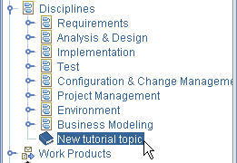 |
The new topic is inserted into Disciplines. |
Change the properties of a topic
|
To change a topic's properties, right-click the topic (for example, Overview). On the pop-up menu, select Properties. |
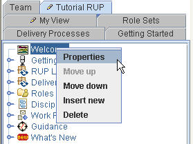 |
|
The Properties Editor dialog opens. In this example, the title of the topic Overview will be changed to Changed Overview. For the Name property, type Changed Overview in the Value field, and click Enter. You can also cut and paste text values into the Value fields of this dialog box. Click OK to close this dialog box. |
|
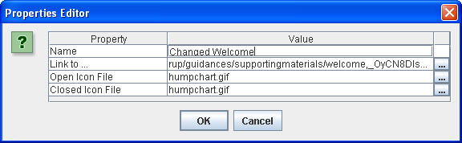 |
|
The name is changed on the tree. |
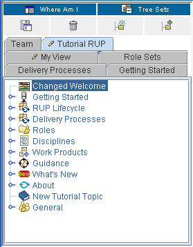 |
Note: The Link to field in the Properties Editor dialog box lets you link to a URL or a file elsewhere in your system.
Move a topic within its parent
The position of a topic can be adjusted within its parent. In this example, the Disciplines topic will be moved up.
|
On the pop-up menu, click Move up. |
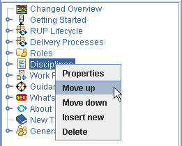 |
|
The display changes to show you the new position of the Disciplines topic. |
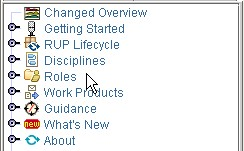 |
Changes to your My View tree are saved as they are made.
Move a topic outside of its parent
You can move a topic to another tree by using the drag and drop feature.
- To start, click the topic and drag it to the new topic.
- Changes to your My View tree are saved as they are made.
Delete a topic
- To delete a topic, select the one you want to remove and click Delete.
- Changes to your My View tree are saved as they are made.
Change a topic's icon
- To change the icon for any topic listed in the tree browser, drag an icon file onto the topic or use the Properties Editor to change the icon name. An icon file is a .gif, .jpg, or .bmp file. The new icon replaces the old one.
- Changes to your My View tree are saved as they are made.
Deleting a My View Tree
The following figures illustrate how to delete a My View tree.
|
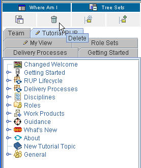 |
Select the tree to delete (in this example, Tutorial RUP). Click the Tutorial RUP tab, and then click Delete. |
The Confirm Deletion of Tree dialog box prompts you to confirm the deletion. Answer
OK to Delete Tutorial RUP permanently?
|
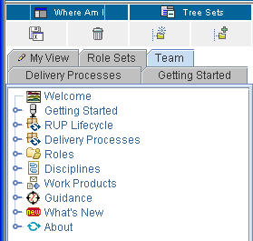 |
The Tutorial RUP tree is removed from the display of tabs in the Tree panel. |
© Copyright IBM Corp. 1987, 2006. All Rights Reserved. |